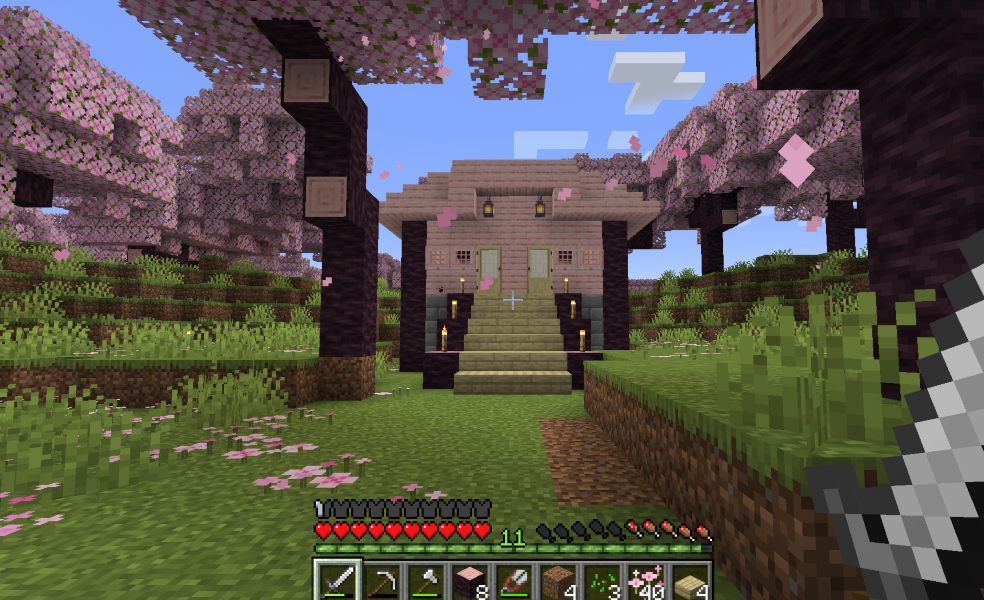
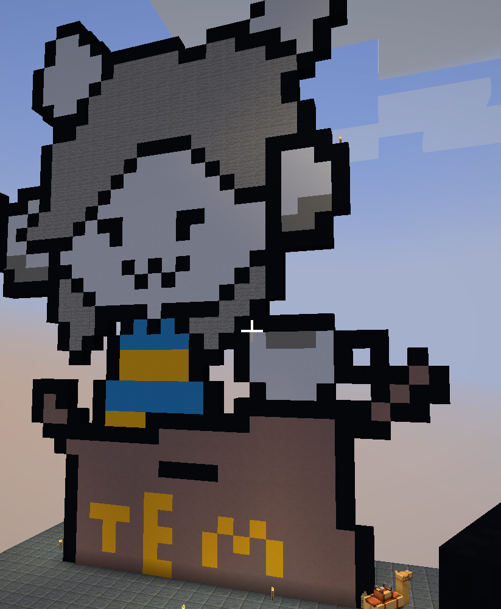
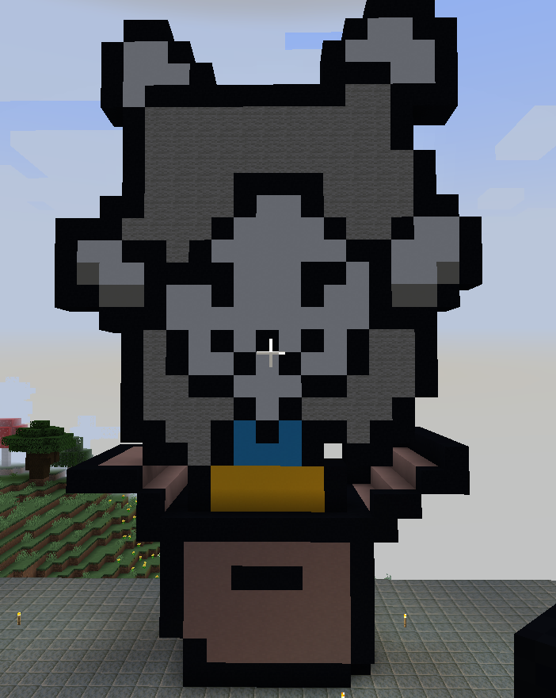

This is the Survial house I made in Minecraft! It has been a long time since I last played Minecraft so it was nice to relearn the old stuff and learn the new tools!

Both Minecraft and Undertale have had a big impact on me growing up so I thought it would be fitting to combine them. The character Temmie single handedly would not leave my head in fifth grade and their spirte is realitivly simple in 2D!

So I lied Temmie's sprite was infact not easy to do espcially when trying to do a 3D version.. The issue was I tired to squish Tem so the model wasnt too big, but instead they just look really squished but still cute.